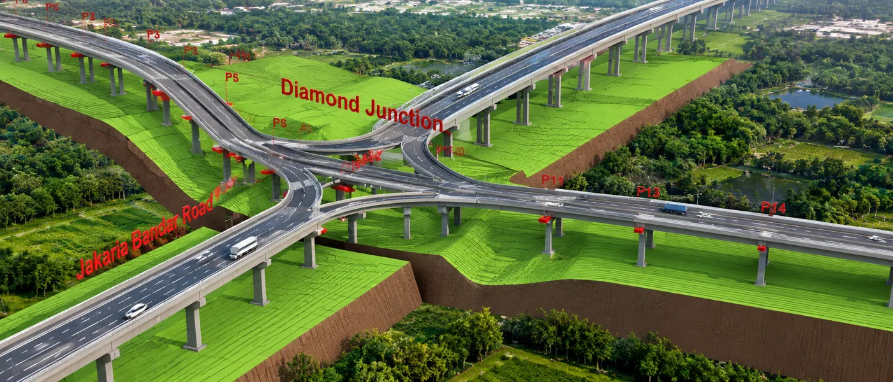

About the Client
The project involved the development and management of 3D GIS models for complex infrastructure assets, including bridges, viaducts, stations and tunnels. The requirement was to bring detailed BIM information into a GIS environment to support asset documentation, visualization, analysis and ongoing management.
The Challenge
Complex infrastructure assets generate detailed architectural and structural BIM information that needs to be organized and made accessible within a geospatial environment.
The requirement was to convert Revit-based 3D models into GIS-compatible datasets while retaining the required asset attribution and structural information.
Key requirements included:
- Integration of architectural and structural Revit models into a GIS environment
- Management of individual infrastructure structures as distinct assets
- Creation of a structured geodatabase based on the required schema
- Verification of 3D model completeness and required attribution
- Publication of 3D infrastructure models for visualization, analysis and wider access
The Solution
CS TECH Ai implemented a 3D Modelling & GeoBIM workflow to transform BIM models into structured, GIS-ready infrastructure information.
The approach included:
- Preparation and assessment of Revit 3D model data
- Conversion of architectural and structural Revit models into geodatabase format
- Analysis of 3D models within GIS, with individual structures separated and managed as assets
- Preparation of the geodatabase according to the required schema model
- Model completeness checks and integration of required attribution within the geodatabase
- Publishing and sharing multipatch layers from the 3D model file geodatabase through ArcGIS Online or ArcGIS Enterprise technologies
The resulting environment enabled detailed infrastructure models to be managed and visualized within GIS while retaining relevant BIM information and asset attributes.
The Impact
The integration of BIM and GIS created a more accessible and informative environment for infrastructure visualization and asset-related decision-making.
Key benefits included: